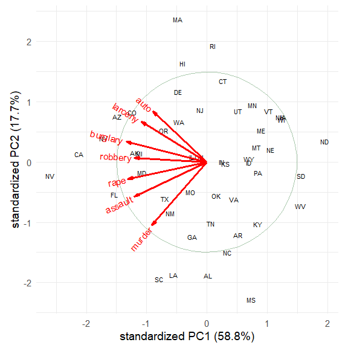
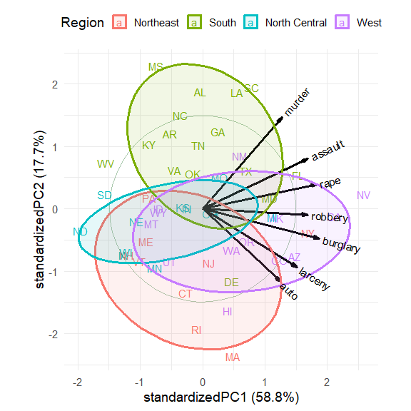
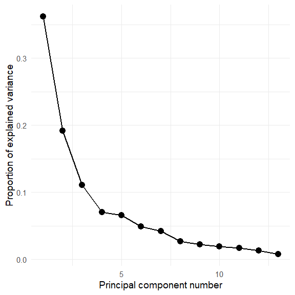
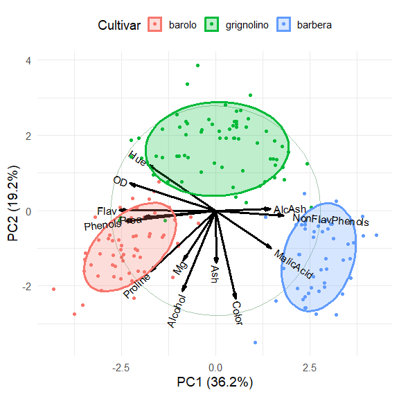

This repo for the ggbiplot package was forked from https://github.com/vqv/ggbiplot by Vince Yu, which has been dormant since 2015.
The goal is to complete that development and publish a new version on CRAN with Vince Yu as the principal author. There is also an experimental branch which attempts to simplify the code, but this has some unresolved problems.
This package provides a ggplot2 implementation of the biplot, a simultaneous plot of scores for observations and vectors for variables for principal component-like analyses.
The package provides two main functions: ggscreeplot() and ggbiplot().
ggbiplot aims to be a drop-in replacement for the built-in R function biplot.princomp() with extended functionality for labeling groups, drawing a correlation circle, and adding data ellipsoids.
Examples
Load packages:
library(ggplot2)
library(ggbiplot)
library(dplyr)
library(corrplot)
# set ggplot2 theme
theme_set(theme_minimal(base_size = 14))Crime data
The crime data gives rates of various serious crimes in each of the 50 U. S. states, originally from the United States Statistical Abstracts (1970).
Let’s take a quick look at the correlations among these, using corrplot::corrplot() and showing each correlation by an ellipse whose eccentricity and shading represents the value of the correlation.
data(crime)
crime |>
dplyr::select(where(is.numeric)) |>
cor() |>
corrplot(method = "ellipse", tl.srt = 0)
The correlations are all positive. Note also that the variables in the dataset are ordered in seriousness or violence, ranging from murder to auto theft.
Carry out a PCA:
crime.pca <-
crime |>
dplyr::select(where(is.numeric)) |>
prcomp(scale. = TRUE)
crime.pca
#> Standard deviations (1, .., p=7):
#> [1] 2.029 1.113 0.852 0.563 0.508 0.471 0.352
#>
#> Rotation (n x k) = (7 x 7):
#> PC1 PC2 PC3 PC4 PC5 PC6 PC7
#> murder -0.300 -0.6292 0.1782 -0.2321 0.5381 0.2591 0.2676
#> rape -0.432 -0.1694 -0.2442 0.0622 0.1885 -0.7733 -0.2965
#> robbery -0.397 0.0422 0.4959 -0.5580 -0.5200 -0.1144 -0.0039
#> assault -0.397 -0.3435 -0.0695 0.6298 -0.5067 0.1724 0.1917
#> burglary -0.440 0.2033 -0.2099 -0.0576 0.1010 0.5360 -0.6481
#> larceny -0.357 0.4023 -0.5392 -0.2349 0.0301 0.0394 0.6017
#> auto -0.295 0.5024 0.5684 0.4192 0.3698 -0.0573 0.1470The biplot, using default scaling (standardized components), and labeling the states by their state abbreviation:
ggbiplot(crime.pca,
labels = crime$st ,
circle = TRUE,
varname.size = 4,
varname.color = "red") 
The directions of the principal components are arbitrary; we are free to reflect the variable vectors and component scores to facilitate interpretation. Also, there seem to be differences among regions of the U.S., which can be visualized using data ellipses for the component scores. The groups argument allows the observations to colored by group and to summarized by groups.
crime.pca <- reflect(crime.pca)
ggbiplot(crime.pca,
groups = crime$region,
labels = crime$st,
labels.size = 4,
var.factor = 1.4,
ellipse = TRUE, ellipse.level = 0.5, ellipse.alpha = 0.1,
circle = TRUE,
varname.size = 4,
varname.color = "black") +
labs(fill = "Region", color = "Region") +
theme(legend.direction = 'horizontal', legend.position = 'top')
The interpretation of the data is now clear.
The first dimension, accounting for 58.8% of variance, can be seen to represent overall crime rate, with Nevada (NV) at the high end and North Dakota (ND), South Dakota (SD) and West Virginia (WV) at the low end.
The second dimension, accounting for 17.7% of variance represents a contrast between personal crime vs. property crime. On this dimension, Massachusetts (MA), Rhode Island (RI) are opposed to Mississippi (MS), Alabama (AL), Louisiana (LA) and South Carolina (SC).
The regions are represented by the differences in the centers of the data ellipses for the scores. Southern states are highest on murder, assault and rape, while the Northeast states are highest on auto theft and larceny.
In this standardized view, the angles between variable vectors approximate the correlations among the variables, according to cos (angle) ≈ r. Thus,
murderandauto, nearly 90o reflect a near 0 correlation.
Wine data
The wine data contains results of a chemical analysis of wines grown in the same region in Italy, derived from three different cultivars. The analysis determined the quantities of 13 chemical constituents found in each of the three types of wines. The grape varieties (cultivars), barolo, barbera, and grignolino, are given in wine.class.
What can we understand about the differences among these wines from a biplot?
library(ggbiplot)
library(ggplot2)
library(dplyr)
data(wine)
wine.pca <- prcomp(wine, scale. = TRUE)
ggscreeplot(wine.pca) 
Hmm. The screeplot shows that more than two dimensions are necessary to account for most of the variance.
Plot the first two PCA dimensions, accounting for 55% of the variance.
ggbiplot(wine.pca,
obs.scale = 1, var.scale = 1,
groups = wine.class,
varname.size = 4,
ellipse = TRUE,
circle = TRUE) +
labs(fill = "Cultivar", color = "Cultivar") +
theme(legend.direction = 'horizontal', legend.position = 'top')
The three cultivars are arranged along the first dimension, in the order barolo < grignolino < barbera. These are distinguished largely by a contrast between (Phenols, Flav) vs. (NonFlavPhenols, AlcAsh). The second dimension is represented by the cluster of variables Mg, Alcohol, Ash, Color, which distinguishes grignolino from the other two.
Iris data
The classic iris data is widely used for examples of multivariate analysis and biplots, so let’s use it here.
data(iris)
iris.pca <- prcomp (~ Sepal.Length + Sepal.Width + Petal.Length + Petal.Width,
data=iris,
scale. = TRUE)
summary(iris.pca)
#> Importance of components:
#> PC1 PC2 PC3 PC4
#> Standard deviation 1.71 0.956 0.3831 0.14393
#> Proportion of Variance 0.73 0.229 0.0367 0.00518
#> Cumulative Proportion 0.73 0.958 0.9948 1.00000Plot the first two dimensions:
iris.gg <-
ggbiplot(iris.pca, obs.scale = 1, var.scale = 1,
groups = iris$Species, point.size=2,
varname.size = 5,
varname.color = "black",
varname.adjust = 1.2,
ellipse = TRUE,
circle = TRUE) +
labs(fill = "Species", color = "Species") +
theme_minimal(base_size = 14) +
theme(legend.direction = 'horizontal', legend.position = 'top')
iris.gg
It is possible to add annotations to the biplot by making use of the fact that ggplot() returns a lot of information in the "gg" object. In particular, the $data component contains the scores on the principal components that are plotted as points here. Here we add direct labels for the groups and suppress the legend.
# get means of coordinates by group
group.labs <-
iris.gg$data |>
summarise(xvar = mean(xvar),
yvar = mean(yvar), .by = groups)
group.labs
#> groups xvar yvar
#> 1 setosa -2.217 -0.288
#> 2 versicolor 0.495 0.548
#> 3 virginica 1.723 -0.260Now, just use geom_label to draw labels for the groups.
iris.gg + geom_label(data = group.labs,
aes(x = xvar, y=yvar, label=groups),
size = 5) +
theme(legend.position = "none")